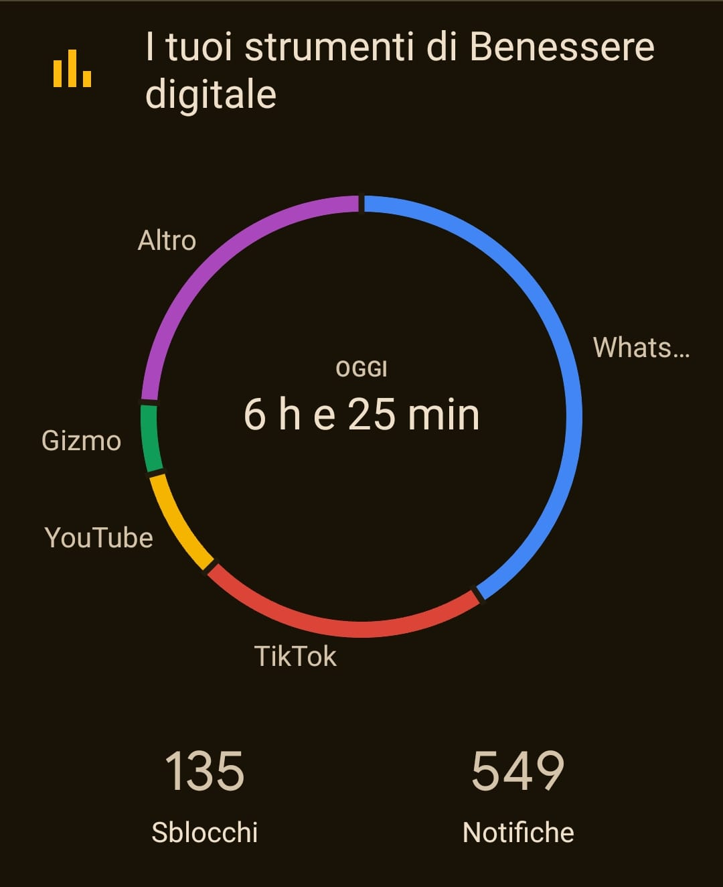

La realidad en cifras
Para entender la magnitud del desafío, debemos observar las estadísticas. El consumo digital ha dejado de ser una herramienta para convertirse en una parte desproporcionada de nuestra vida diaria.
Consumo promedio de pantallas
Un usuario promedio pasa aproximadamente 6 horas y 40 minutos conectado a internet diariamente. En jóvenes de entre 16 y 24 años, esta cifra puede superar las 9 horas.
Impacto en la salud
El uso de redes sociales por más de 3 horas al día está asociado con un aumento del riesgo de desarrollar síntomas de ansiedad y depresión en adolescentes.
